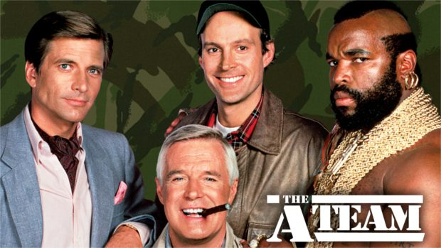

El equipo A
- Duracion cap. :
- 60 minutos
- Genero :
- Accion, aventura
- Información :
- Serie TV (1983-1987)
- Sinopsis :
- Narra las andanzas de un grupo de cuatro soldados desertores de la guerra de Vietnam, que trabajan como mercenarios, siempre por causas justas.